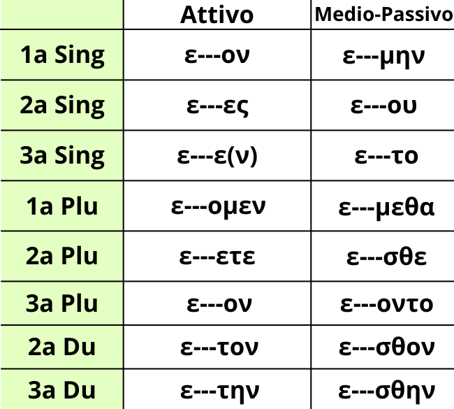

L'imperfetto indicativo dei verbi tematici è un tempo storico, ovvero che confina le azioni nel passato. Infatti l'imperfetto in Greco Antico viene usato molto di più che in italiano poiché ha molti valori, tra cui quello conativo, ovvero un'azione tentata, o iterativo, cioè un'azione ripetuta.
La sua più peculiare caratteristica è l'aumento, ovvero l'aggiunta di una ε all'inizio del verbo. Da ciò si originano due tipi di aumento, quello sillabico, se il verbo comincia per consonante, e temporale, se il verbo comincia per vocale. Quest'ultimo tipo di aumento in particolare si ispira alle contrazioni, cosa che però vedrai in modo più approfondito più tardi. Intanto ricorda le contrazioni necessarie dell'imperfetto, ovvero:
ε+α → η;ε+ᾳ → ῃ;
ε+ε → η, a volte però diventa -ει;
ε+ι → ι;
ε+ο → ω;
ε+υ → υ;
ε+αι → ῃ;
ε+αυ → ηυ;
ε+ει → ῃ/ει;
ε+ευ → ηυ/ευ;
ε+οι → ῳ;
Le desinenze sono differenti dal presente indicativo, ma comunque hanno qualche somiglianza. Nella tabella riportata puoi vedere una ε all'inizio, che indica l'aumento da eseguire, dei trattini, ovvero il tema del verbo, e infine la desinenza da applicare per ogni persona. Un esempio di aumento sillabico lo si può fare col verbo βαίνω:
Attivo: Έβαινον, Έβαινες, Έβαινε(ν), Εβαίνομεν, Εβαίνετε, Έβαινον, Εβαίνετον, Εβαινέτην;
Medio-Passivo: Εβαινόμην, Εβαίνου, Εβαίνετο, Εβαινόμεθα, Εβαίνεσθε, Εβαίνοντο, Εβαίνεσθον, Εβαινέσθην;
Invece un esempio con un verbo con l'aumento temporale può essere αγείρω:
Attivo: Ήγειρον, Ήγειρες, Ήγειρε(ν), Ηγείρομεν, Ηγείρετε, Ήγειρον, Ηγείρετον, Ηγειρέτην;
Medio-Passivo: Ηγειρόμην, Ηγείρου, Ηγείρετο, Ηγειρόμεθα, Ηγείρεσθε, Ηγείροντο, Ηγείρεσθον, Ηγειρέσθην;
Ma non finisce qui. In greco antico i verbi possono anche essere formati da dei preverbi, che cambiano il significato del verbo base abbinato in modo specifico. Qui l'imperfetto gioca in modo sporco, perché infatti non funziona mettendo una ε all'inizio, ma mettendola tra preverbo e verbo, con almeno il funzionamento uguale ai due tipi di aumenti, se non per qualche differenza. Qui sono elencate alcune regole:
1. Di solito la vocale finale del preverbo cade, lasciando spazio esclusivo alla ε (Es. Καταλείπω → Κατέλειπον). Gli unici casi in cui rimane sono coi preverbi αμφι-, περι- e talvolta anche προ- (Es. Περιβαίνω → Περιέβαινον);
2. I preverbi che sono stati modificati al presente tornano alla loro forma originaria. Riguardano solo i preverbi terminanti in nasale (quindi εν- e συν-) e le principali consonanti finali di un preverbo da presente a imperfetto si trasformano così:
-ν+gutturale (κ/γ/χ) → -γ-;
-ν+labbiale (β,π,φ) → -μ-;
-ν+λ → -λ-;
3. Il preverbo εκ- si trasforma in εξ- (Es. Εκπλήττω → Εξέπληττον).
Infine, ci sono alcuni verbi che, invece di avere l'aumento in η, hanno l'aumento in ει. Essi sono:
έχω → εἶχον;
εάω → είων
εθίζω → είθιζον
ελίσσω → είλισσον
έλκω → εἶλκον
έπομαι → ειπόμην
εργάζομαι → ειργαζόμην
έρπω → εἶρπον
εστιάω → ειστίων
Poi vi è οράω che invece subisce un doppio aumento. Infatti la sua forma all'imperfetto è εώρων. Infine βουλομαι e μέλλω possono avere due tipi di aumento, poiché possono risultare o con l'η o con la ε davanti.
Di sicuro sono tante informazioni da doversi ricordare, ma inevitabilmente ti serviranno per destreggiarti in versioni e frasi da tradurre. Prova partire comprendendo la teoria, poi le desinenze, nel mentre facendo esercizio di coniugazione, i preverbi con le loro particolarità e infine i verbi che hanno l'aumento con ει.